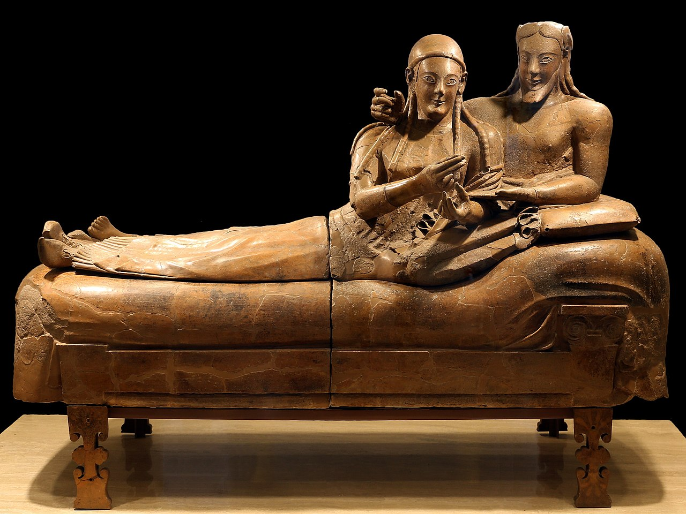

Unraveling the Past, One Story at a Time

Discover the events, figures, and secrets that shaped our world.
History is a vast and fascinating journey through time, filled with legendary civilizations, epic battles, unsolved mysteries, and influential figures who shaped the world. From the mighty Egyptian pharaohs and Roman emperors to the revolutions that changed nations, history offers countless lessons and stories. The rise and fall of great empires, the impact of world wars, the secrets of ancient technologies, and the unsolved mysteries of lost civilizations continue to intrigue and inspire. Whether it's the brilliance of Renaissance thinkers, the conquests of legendary warriors, or the dark chapters of human history, every moment has shaped the present. Dive into the past and explore the events that defined humanity.

Explore the Greatest Moments in History
- Ancient Civilizations
- Egyptian Pharaohs and Pyramids
- Roman Empire and Gladiators
- Greek Mythology and Philosophy
- Lost Civilizations (Atlantis, Mayans, etc.)
- Famous Wars and Battles
- World War I & II
- The Cold War & Espionage
- Medieval Battles and Crusades
- Revolutions (French, American, Russian)
- Unsolved Historical Mysteries
- The Disappearance of Amelia Earhart
- The Lost Colony of Roanoke
- The Antikythera Mechanism
- The Secret of the Bermuda Triangle
- Great Historical Figures
- Julius Caesar and the Fall of Rome
- Napoleon Bonaparte’s Conquests
- Genghis Khan and the Mongol Empire
- Winston Churchill and World War II
- Dark Chapters of History
- Witch Hunts and the Salem Trials
- The Black Death Pandemic
- The Rise and Fall of Nazi Germany
- Genocides and War Crimes
- Historical Conspiracies and Secrets
- Did Hitler Really Die in 1945?
- The Knights Templar and Hidden Treasures
- The CIA’s Secret Experiments (MKUltra)
- The Mystery of Jack the Ripper
- Ancient Technologies and Lost Knowledge
- Pyramids and Megalithic Structures
- Leonardo da Vinci’s Lost Inventions
- Ancient Medicine and Alchemy
- Unexplained Ancient Artifacts
- Influential Empires and Kingdoms
- The Ottoman Empire
- The British Empire
- The Byzantine Empire
- The Persian Empire

Ancient civilizations laid the foundation for the modern world, shaping culture, technology, and governance. From the towering pyramids of Egypt to the philosophical wisdom of Greece and the military might of Rome, these societies developed complex political systems, written languages, and engineering marvels. The Mesopotamians created the first known cities, the Chinese built the Great Wall, and the Mayans mastered astronomy. Despite their rise and fall, their legacies continue to influence us today, offering a glimpse into humanity’s greatest achievements and mysteries.